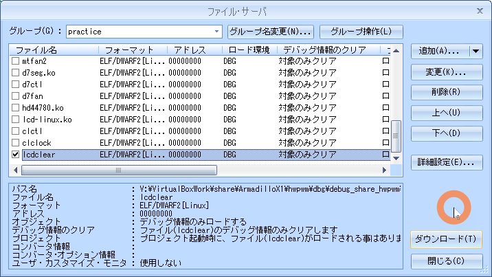
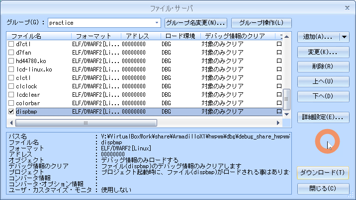

08a.lcd
▶︎
all
running...
目的
組込みアプリケーション開発 08a.lcd
構成データ
/media/sf_ArmadilloX1/hwpwm/work/R06_2024/Apllication_debug/text/practice ディレクトリ
･･･/share/ArmadilloX1/hwpwm/work/R06_2024/Application_debug/text/practice/ の構成
user@1204PC-Z490M:/mnt/v/VirtualBoxWork/share/ArmadilloX1/hwpwm/work/R06_2024/Application_debug/text/practice$ tree -aF -L 3
./
├── 08.lcd/
│ ├── bitmap/
│ │ ├── 1-sea.bmp* <───── 課題2用ビットマップファイル
│ │ ├── 2-park.bmp* <───── 課題2用ビットマップファイル
│ │ ├── 3-church.bmp* <───── 課題2用ビットマップファイル
│ │ └── 4-factory.bmp* <───── 課題2用ビットマップファイル
│ ├── colorbar.c* <───── 課題1 デバイス制御用ソース
│ ├── dispbmp.c* <───── 課題2 デバイス制御用ソース
│ ├── lcdclear.c* <───── 例題 デバイス制御用ソース
│ ├── Makefile* <───── デバイス制御用Makefile
│ └── primcol.rgb* <───── 24ビット非圧縮ビットマップ画像ファイル
LCD制御
デバイス仕様
LCDのハードウェア仕様
- 横800 X 縦480 pixel
- 1pixel 24bit RGB88形式

- フレームバッファデバイスはファイルではなくメモリ
- システムには画像データを格納するためのフレームバッファと呼ばれるメモリ領域がある
- LCD上の各pixelはフレームバッファの中にカラーデータが格納
- カラーデータをRGB88形式でリトルエンディアンの形でフレームバッファに書き込むと LCD 上の対応するpixel を点灯
- プログラムの中でフレームバッファのアドレスを取得するには mmap システムコール
デバイスファイル
"/dev/fb0/"
primcol.rgb を ArmadilloX1へコピー
sudo cp primcol.rgb /work/linux/nfsroot/debug/04_practice/
atmark@atde8:/media/sf_ArmadilloX1/hwpwm/work/R06_2024/Application_debug/text/practice-example/08a.lcd$ sudo cp primcol.rgb /work/linux/nfsroot/debug/04_practice/
フレームバッファによる LCD 描画
root@armadillo:/debug/04_practice# cat primcol.rgb > /dev/fb0
実行している様子
フレームバッファによるLCDへの描画している動画
例題 lcdclear
ソース
lcdclear.c
08a.lcd/lcdclear.c
#include <stdio.h>
#include <fcntl.h>
#include <sys/mman.h>
#include <string.h>
#include <unistd.h>
#define SCREENWIDTH 800
#define SCREENHEIGHT 480
#define BYTES_PER_PIXCEL 4
#define SCREENSIZE (SCREENWIDTH * SCREENHEIGHT * BYTES_PER_PIXCEL)
int main(void)
{
int fd;
unsigned int *pfb;
// フレームバッファをオープンします。
// オープンに失敗した場合はエラーで終了します。
if ((fd = open("/dev/fb0", O_RDWR)) < 0) {
perror("open(fb)");
return 1;
}
/* mmapによりバッファの先頭アドレスを取得します。 */
pfb = mmap(0, SCREENSIZE, PROT_READ|PROT_WRITE, MAP_SHARED, fd, 0);
// 取得に失敗した場合はエラーで終了します。
if (pfb == MAP_FAILED){
perror("mmap");
return 1;
}
// LCDの画面表示を全て消去するために、
// 取得したアドレスから確保領域を全て0で初期化します。
memset(pfb, 0, SCREENSIZE);
// フレームバッファのために確保した領域を開放します。
munmap(pfb, SCREENSIZE);
// フレームバッファをクローズします。
close(fd);
return 0;
}
Makefile
$(CFLAGS) と cp -p ./*.bmp を追加している
08a.lcd/Makefile
CC = arm-linux-gnueabihf-gcc
#TARGET = lcdclear colorbar dispbmp
TARGET = lcdclear
CFLAGS = -gdwarf-2 -O0
all: $(TARGET)
lcdclear: lcdclear.c
$(CC) $(CFLAGS) -o $@ $<
colorbar: colorbar.c
$(CC) $(CFLAGS) -o $@ $<
dispbmp: dispbmp.c
$(CC) $(CFLAGS) -o $@ $<
install :
cp -p $(TARGET) /work/linux/nfsroot/debug/04_practice
cp -p $(TARGET) /media/sf_ArmadilloX1/hwpwm/dbg/debug_share_hwpwm/R06_2024/04_practice
cp -p $(TARGET).c /media/sf_ArmadilloX1/hwpwm/dbg/debug_share_hwpwm/R06_2024/04_practice
cp -p bitmap/*.bmp /work/linux/nfsroot/debug/04_practice
cp -p bitmap/*.bmp /media/sf_ArmadilloX1/hwpwm/dbg/debug_share_hwpwm/R06_2024/04_practice
clean:
rm -f $(TARGET)
.PHONY: clean
動作確認
make clean
$ make clean
atmark@atde8:/media/sf_ArmadilloX1/hwpwm/work/R06_2024/Application_debug/text/practice-example/08a.lcd$ make clean
rm -f lcdclear
make
$ make
atmark@atde8:/media/sf_ArmadilloX1/hwpwm/work/R06_2024/Application_debug/text/practice-example/08a.lcd$ make lcdclear
arm-linux-gnueabihf-gcc -gdwarf-2 -O0 -o lcdclear lcdclear.c
sudo make install
$ sudo make install
atmark@atde8:/media/sf_ArmadilloX1/hwpwm/work/R06_2024/Application_debug/text/practice-example/08a.lcd$ sudo make install
[sudo] atmark のパスワード:
cp -p lcdclear /work/linux/nfsroot/debug/04_practice
cp -p lcdclear /media/sf_ArmadilloX1/hwpwm/dbg/debug_share_hwpwm/R06_2024/04_practice
cp -p lcdclear.c /media/sf_ArmadilloX1/hwpwm/dbg/debug_share_hwpwm/R06_2024/04_practice
cp -p bitmap/*.bmp /work/linux/nfsroot/debug/04_practice
cp -p bitmap/*.bmp /media/sf_ArmadilloX1/hwpwm/dbg/debug_share_hwpwm/R06_2024/04_practice
CSIDEでロード
メニュー「ファイル」-「ロード」

実行結果
root@armadillo:/debug/04_practice# ./lcdclear
root@armadillo:/debug/04_practice# ./lcdclear
実行している様子
lcdclear を実行している動画
課題1 colorbar

ソース
colorbar.c
08a.lcd/colorbar.c
#include <stdio.h>
#include <fcntl.h>
#include <sys/mman.h>
#include <unistd.h>
#define SCREENWIDTH 800
#define SCREENHEIGHT 480
#define BYTES_PER_PIXCEL 4
#define SCREENSIZE (SCREENWIDTH * SCREENHEIGHT * BYTES_PER_PIXCEL)
#define RGB888(r, g, b) (((r) & 0xff) << 16 | \
((g) & 0xff) << 8 | \
((b) & 0xff))
#define WHITE RGB888(0xff, 0xff, 0xff)
#define YELLOW RGB888(0xff, 0xff, 0x00)
#define CYAN RGB888(0x00, 0xff, 0xff)
#define GREEN RGB888(0x00, 0xff, 0x00)
#define MAGENTA RGB888(0xff, 0x00, 0xff)
#define RED RGB888(0xff, 0x00, 0x00)
#define BLUE RGB888(0x00, 0x00, 0xff)
// LCDに画像を描画する関数。
void fill_rect(unsigned int *pfb, int x0, int y0, int w, int h, unsigned int color)
{
}
int main(void)
{
// フレームバッファをオープンします。
// フレームバッファのために確保した領域を開放します。
// フレームバッファをクローズします。
return 0;
}
Makefile
08a.lcd/Makefile
CC = arm-linux-gnueabihf-gcc
#TARGET = lcdclear colorbar dispbmp
TARGET = colorbar
CFLAGS = -gdwarf-2 -O0
all: $(TARGET)
lcdclear: lcdclear.c
$(CC) $(CFLAGS) -o $@ $<
colorbar: colorbar.c
$(CC) $(CFLAGS) -o $@ $<
dispbmp: dispbmp.c
$(CC) $(CFLAGS) -o $@ $<
install :
cp -p $(TARGET) /work/linux/nfsroot/debug/04_practice
cp -p $(TARGET) /media/sf_ArmadilloX1/hwpwm/dbg/debug_share_hwpwm/R06_2024/04_practice
cp -p $(TARGET).c /media/sf_ArmadilloX1/hwpwm/dbg/debug_share_hwpwm/R06_2024/04_practice
cp -p bitmap/*.bmp /work/linux/nfsroot/debug/04_practice
cp -p bitmap/*.bmp /media/sf_ArmadilloX1/hwpwm/dbg/debug_share_hwpwm/R06_2024/04_practice
clean:
rm -f $(TARGET)
.PHONY: clean
動作確認
make clean
$ make clean
atmark@atde8:/media/sf_ArmadilloX1/hwpwm/work/R06_2024/Application_debug/text/practice-example/08a.lcd$ make clean
rm -f colorbar
make
$ make
atmark@atde8:/media/sf_ArmadilloX1/hwpwm/work/R06_2024/Application_debug/text/practice-example/08a.lcd$ make colorbar
arm-linux-gnueabihf-gcc -gdwarf-2 -O0 -o colorbar colorbar.c
sudo make install
$ sudo make install
atmark@atde8:/media/sf_ArmadilloX1/hwpwm/work/R06_2024/Application_debug/text/practice-example/08a.lcd$ sudo make install
cp -p colorbar /work/linux/nfsroot/debug/04_practice
cp -p colorbar /media/sf_ArmadilloX1/hwpwm/dbg/debug_share_hwpwm/R06_2024/04_practice
cp -p colorbar.c /media/sf_ArmadilloX1/hwpwm/dbg/debug_share_hwpwm/R06_2024/04_practice
cp -p bitmap/*.bmp /work/linux/nfsroot/debug/04_practice
cp -p bitmap/*.bmp /media/sf_ArmadilloX1/hwpwm/dbg/debug_share_hwpwm/R06_2024/04_practice
CSIDEでロード
メニュー「ファイル」-「ロード」
実行
root@armadillo:/debug/04_practice# ./colorbar
root@armadillo:/debug/04_practice# ./colorbar
実行している様子
課題2 dispbmp
- *.bmp を LCD へ表示
- 読み込んだ画像が LCD よりも小さい時は LCD 中央に表示
- 反対に LCD よりも大きな画像の場合はエラーメッセージを出力してプログラムを終了
24ビット非圧縮ビットマップ画像ファイルフォーマット

ビットマップヘッダー（BIMAPFILEHEADER & BITMAPINFOHEADER）
typedef struct tagBITMAPFILEHEADER{ // ビットマップファイルヘッダ
unsigned short bfType; // 識別子0x4d42(‘B’,‘M’)
unsigned long bfSize; // ファイルサイズ
unsigned short bfReserved1; // 使わない
unsigned short bfReserved2; // 使わない
unsigned long bfOffBits; // ファイル内の画像データ開始位置
} __attribute__((packed)) BITMAPFILEHEADER;
typedef struct tagBITMAPINFOHEADER{ // ビットマップ情報ヘッダ
unsigned long biSize; // 情報ヘッダサイズ
long biWidth; // 画像の幅
long biHeight; // 画像の高さ
unsigned short biPlanes; // プレーン数（1に固定）
unsigned short biBitCount; // 1ピクセルあたりのビット数
unsigned long biCompression; // 圧縮タイプ
unsigned long biSizeImage; // 画像データサイズ
long biXPixPerMeter; // 横1mあたりのピクセル数
long biYPixPerMeter; // 縦1mあたりのピクセル数
unsigned long biClrUsed; // パレット数
unsigned long biClrImporant; // 重要パレット数
} __attribute__((packed)) BITMAPINFOHEADER;
ソース
dispbmp.c
08a.lcd/dispbmp.c
#include <stdio.h>
#include <stdlib.h>
#include <fcntl.h>
#include <sys/mman.h>
#include <string.h>
#include <unistd.h>
#define SCREENWIDTH 800
#define SCREENHEIGHT 480
#define BYTES_PER_PIXCEL 4
#define SCREENSIZE (SCREENWIDTH * SCREENHEIGHT * BYTES_PER_PIXCEL)
#define RGB888(r, g, b) (((r) & 0xff) << 16 | \
((g) & 0xff) << 8 | \
((b) & 0xff))
typedef struct tagBITMAPFILEHEADER{ // ビットマップファイルヘッダ
unsigned short bfType; // 識別子0x4d42(‘B’,‘M’)
unsigned long bfSize; // ファイルサイズ
unsigned short bfReserved1; // 使わない
unsigned short bfReserved2; // 使わない
unsigned long bfOffBits; // ファイル内の画像データ開始位置
} __attribute__((packed)) BITMAPFILEHEADER;
typedef struct tagBITMAPINFOHEADER{ // ビットマップ情報ヘッダ
unsigned long biSize; // 情報ヘッダサイズ
long biWidth; // 画像の幅
long biHeight; // 画像の高さ
unsigned short biPlanes; // プレーン数（1に固定）
unsigned short biBitCount; // 1ピクセルあたりのビット数
unsigned long biCompression; // 圧縮タイプ
unsigned long biSizeImage; // 画像データサイズ
long biXPixPerMeter; // 横1mあたりのピクセル数
long biYPixPerMeter; // 縦1mあたりのピクセル数
unsigned long biClrUsed; // パレット数
unsigned long biClrImporant; // 重要パレット数
} __attribute__((packed)) BITMAPINFOHEADER;
/*
* draw_bmp - draw bitmap image on LCD screen
* pfb: pointer to the framebuffer
* x0: x coordinates of image
* y0: y coordinates of image
* w: image width
* h: image height
* bmpdata: pointer to the image data
*/
void draw_bmp(unsigned int *pfb, int x0, int y0, int w, int h, unsigned char *bmpdata)
{
XXXXX...
}
int main(int argc, char **argv) {
int fd_in, fd_fb;
unsigned int *pfb;
unsigned char *bmpdata;
int datasize;
int x, y;
struct bmpheader_t{
BITMAPFILEHEADER fh;
BITMAPINFOHEADER ih;
} bmp;
// 引数が設定されていなかった場合はエラーで終了します。
if (argc != 2){
fprintf(stderr, "Usage: %s bmpfile\n", argv[0]);
return 1;
}
// 引数に設定されたファイルをオープンします。
// オープンに失敗した場合はエラーで終了します。
if ((fd_in = open(argv[1], O_RDONLY)) < 0) {
perror("open(file)");
return 1;
}
// ビットマップヘッダに、画像データを読み込みます。
// 読み込みに失敗した場合はエラーで終了します。
if (read(fd_in, &bmp, sizeof(bmp)) != sizeof(bmp)){
perror("read(file)");
return 1;
}
// 取得した画像データより、
// 識別子、1ピクセルあたりのビット数、圧縮タイプ、画像の高さをチェックします。
if (bmp.fh.bfType != 0x4d42 || bmp.ih.biBitCount != 24
|| bmp.ih.biCompression != 0 || bmp.ih.biHeight < 0){
fprintf(stderr, "unsupported bitmap format\n");
return 1;
}
// 取得した画像データより、
// 画像データの幅と高さが画面サイズよりも大きい場合はエラーで終了します。
if (XXXXX){
fprintf(stderr, "image size too big\n");
return 1;
}
// 画像データから、ビットマップファイルのヘッダ情報のデータサイズを引いた値を
// データサイズとして、メモリ領域を確保します。
datasize = bmp.fh.bfSize - sizeof(bmp);
// 必要なメモリ領域を確保できない場合はエラーで終了します。
if (!(bmpdata = malloc(datasize))){
perror("malloc");
return 1;
}
// 確保したメモリ領域に画像データを読み込みます。
// 読み込みに失敗した場合はエラーで終了します。
if (read(fd_in, bmpdata, datasize) != datasize){
perror("read(file)");
free(bmpdata);
return 1;
}
//画像ファイルをクローズします。
close(fd_in);
// フレームバッファをオープンします。
// オープンに失敗した場合はエラーで終了します。
if ((fd_fb = open("/dev/fb0", O_RDWR)) < 0) {
perror("open(fb)");
free(bmpdata);
return 1;
}
// mmapによりバッファの先頭アドレスを取得します。
pfb = mmap(0, SCREENSIZE, PROT_READ|PROT_WRITE, MAP_SHARED, fd_fb, 0);
// 取得に失敗した場合はエラーで終了します。
if (pfb == MAP_FAILED){
perror("mmap");
free(bmpdata);
return 1;
}
// LCDの画面表示を全て消去するために、
// 取得したアドレスから確保領域を0で初期化します。
memset(pfb, 0, SCREENSIZE);
// 画像がLCDの中央に表示されるようにx, yを設定します。
x = XXXXX;
y = XXXXX;
// LCDに画像を表示します。
draw_bmp(pfb, x, y, XXXXX, XXXXX, bmpdata);
// フレームバッファのために確保した領域を開放します。
munmap(pfb, SCREENSIZE);
// フレームバッファをクローズします。
close(fd_fb);
// 画像表示に必要なメモリ領域を開放します。
free(bmpdata);
return 0;
}
Makefile
08a.lcd/Makefile
CC = arm-linux-gnueabihf-gcc
#TARGET = lcdclear colorbar dispbmp
TARGET = dispbmp
CFLAGS = -gdwarf-2 -O0
all: $(TARGET)
lcdclear: lcdclear.c
$(CC) $(CFLAGS) -o $@ $<
colorbar: colorbar.c
$(CC) $(CFLAGS) -o $@ $<
dispbmp: dispbmp.c
$(CC) $(CFLAGS) -o $@ $<
install :
cp -p $(TARGET) /work/linux/nfsroot/debug/04_practice
cp -p $(TARGET) /media/sf_ArmadilloX1/hwpwm/dbg/debug_share_hwpwm/R06_2024/04_practice
cp -p $(TARGET).c /media/sf_ArmadilloX1/hwpwm/dbg/debug_share_hwpwm/R06_2024/04_practice
cp -p bitmap/*.bmp /work/linux/nfsroot/debug/04_practice
cp -p bitmap/*.bmp /media/sf_ArmadilloX1/hwpwm/dbg/debug_share_hwpwm/R06_2024/04_practice
clean:
rm -f $(TARGET)
.PHONY: clean
動作確認
make clean
$ make clean
atmark@atde8:/media/sf_ArmadilloX1/hwpwm/work/R06_2024/Application_debug/text/practice-example/08a.lcd$ make clean
rm -f dispbmp
make
$ make
atmark@atde8:/media/sf_ArmadilloX1/hwpwm/work/R06_2024/Application_debug/text/practice-example/08a.lcd$ make dispbmp
arm-linux-gnueabihf-gcc -gdwarf-2 -O0 -o dispbmp dispbmp.c
sudo make install
$ sudo make install
atmark@atde8:/media/sf_ArmadilloX1/hwpwm/work/R06_2024/Application_debug/text/practice-example/08a.lcd$ sudo make install
cp -p dispbmp /work/linux/nfsroot/debug/04_practice
cp -p dispbmp /media/sf_ArmadilloX1/hwpwm/dbg/debug_share_hwpwm/R06_2024/04_practice
cp -p dispbmp.c /media/sf_ArmadilloX1/hwpwm/dbg/debug_share_hwpwm/R06_2024/04_practice
cp -p bitmap/*.bmp /work/linux/nfsroot/debug/04_practice
cp -p bitmap/*.bmp /media/sf_ArmadilloX1/hwpwm/dbg/debug_share_hwpwm/R06_2024/04_practice
CSIDEでロード
メニュー「ファイル」-「ロード」

実行
root@armadillo:/debug/04_practice# ./dispbmp
root@armadillo:/debug/04_practice# ./dispbmp 1-sea.bmp
root@armadillo:/debug/04_practice# ./dispbmp 2-park.bmp
root@armadillo:/debug/04_practice# ./dispbmp 3-church.bmp
root@armadillo:/debug/04_practice# ./dispbmp 4-factory.bmp
root@armadillo:/debug/04_practice# ./lcdclear